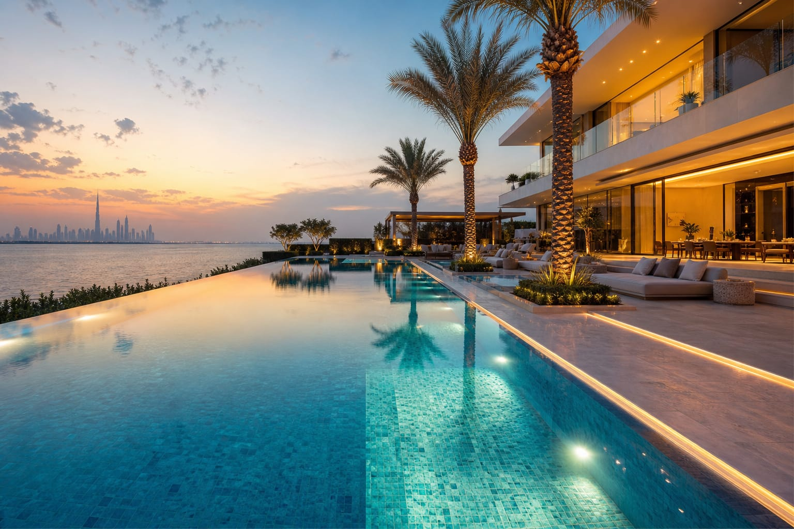
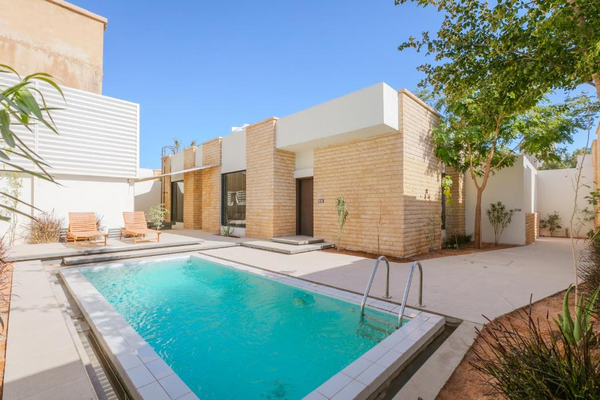
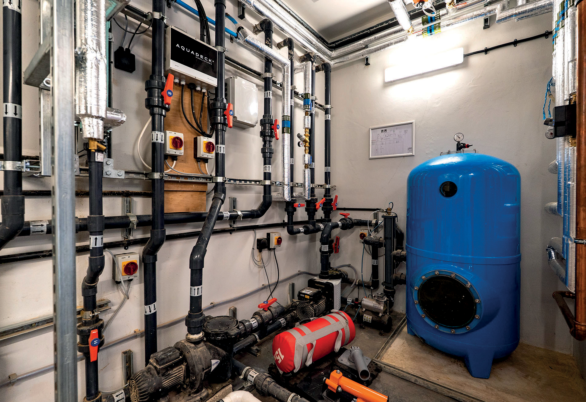
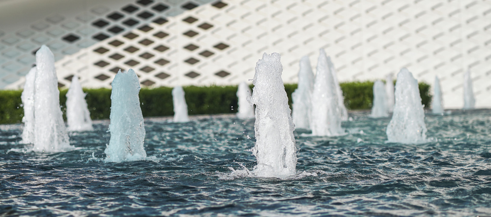
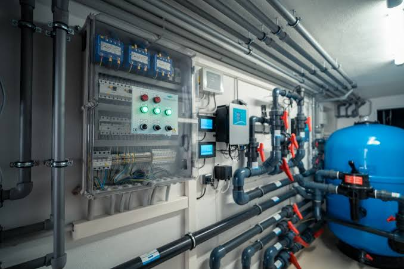
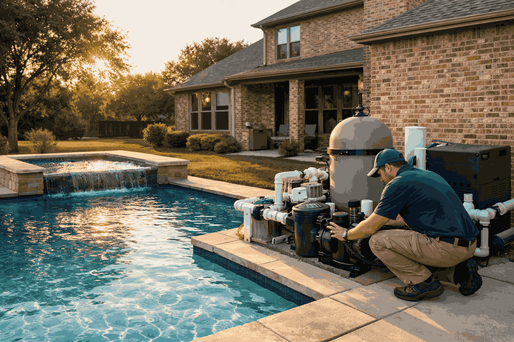
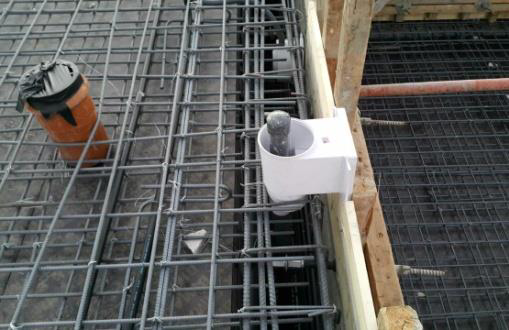
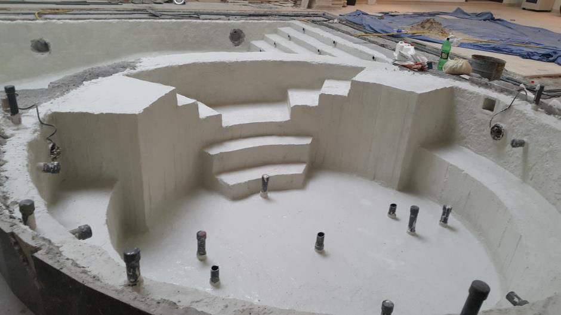
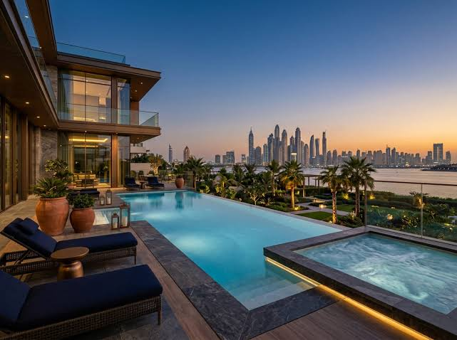
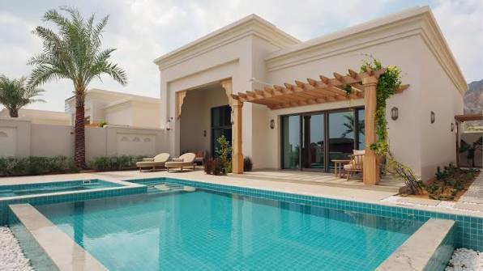

{{ t.stamp }}
هذه الصفحة تُعرض على شاشة الكمبيوتر
نسخة سطح المكتب مصمّمة بعرض ١٤٤٠ بكسل، ولا تظهر بشكلها الصحيح على الهاتف. افتح الرابط نفسه من اللابتوب أو الكمبيوتر لمعاينتها.
{{ t.noteDeviceK }}
{{ t.noteDeviceV }}
{{ t.noteStyleK }}
{{ t.noteStyleV }}
{{ t.noteDataK }}
{{ t.noteDataV }}

{{ s.brand }}
{{ s.brandSub }}
{{ s.navHome }}
{{ s.navProjects }}
{{ s.navEngineering }}
{{ s.navContact }}
{{ s.langBtn }}
{{ s.quote }}

{{ s.heroEyebrow }}
{{ s.heroA }} {{ s.heroB }}
{{ s.heroLede }}
{{ s.viewProjects }}
{{ s.siteVisit }}
{{ s.heroCaption }}
{{ st.v }}
{{ st.l }}
{{ s.aboutEyebrow }}
{{ s.aboutTitle }}
{{ s.aboutBody1 }}
{{ s.aboutBody2 }}
{{ pl.k }}
{{ pl.v }}



{{ s.servEyebrow }}
{{ s.servTitle }}
{{ s.servLede }}
{{ f.n }}
{{ f.title }}
{{ f.note }}
{{ sv.n }}
{{ sv.title }}
{{ sv.note }}
{{ s.workEyebrow }}
{{ s.workTitle }}
{{ heroProj.cat }}
{{ heroProj.title }}
{{ heroProj.meta }}
{{ p.cat }}
{{ p.title }}
{{ p.meta }}
{{ s.engEyebrow }}
{{ s.engTitle }}
{{ s.engBody }}


{{ s.partnersLabel }}
{{ sy.n }}
{{ sy.title }}
{{ sy.note }}
{{ s.procEyebrow }}
{{ s.procTitle }}
{{ s.procLede }}


{{ st.n }}
{{ st.dur }}
{{ st.title }}
{{ st.note }}

{{ s.ctaA }} {{ s.ctaB }}
{{ s.ctaLede }}
{{ s.navProjects }}
{{ s.projTitle }}
{{ s.projLede }}
{{ p.cat }}
{{ p.year }}
{{ p.title }}
{{ p.meta }}
{{ s.navEngineering }}
{{ s.engPageTitle }}
{{ s.engPageLede }}
{{ sy.n }}
{{ sy.title }}
{{ sy.note }}
{{ s.maintTitle }}
{{ s.maintBody }}
{{ m.k }}
{{ m.v }}
{{ s.maintCaption }}
{{ s.navContact }}
{{ s.contactTitle }}
{{ s.contactLede }}

{{ s.officeLabel }}
{{ s.country }}
{{ s.addressPh }}
{{ s.addressPh }}
{{ s.phoneLabel }}
{{ s.phonePh }}
{{ s.emailPh }}
{{ s.emailPh }}
{{ h.k }}
{{ h.v }}
{{ s.quote }}
{{ s.formLede }}
{{ s.fName }}
{{ s.fPhone }}
{{ s.fType }}
{{ s.fTypeVal }}▾
{{ s.fArea }}
{{ s.fSelect }}▾
{{ s.fScope }}
{{ c }}
{{ s.fNotes }}
{{ s.send }}
{{ s.routed }}
{{ s.footerBlurb }}
{{ s.footerCol1 }}
{{ s.footerCol2 }}
{{ s.navContact }}
{{ s.phonePh }}
{{ s.emailPh }}
{{ s.socialPh }}
{{ s.copyright }}
{{ s.byline }}